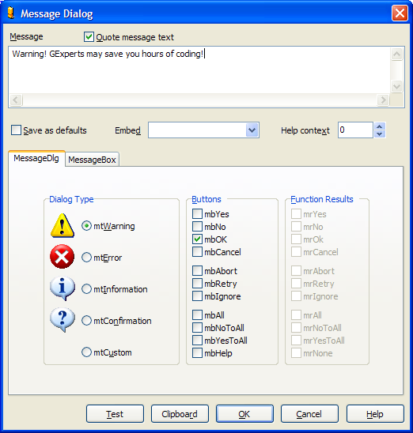

Message Dialog |
|
The Message Dialog expert provides a convenient way to enter MessageDlg or Windows MessageBox function calls code into your source code. To use this expert, fill out the fields shown and press the OK button. The expert will then generate the required function call and insert it into the editor. If your message contains embedded carriage returns, those will be reflected in the message shown. You can test the execution of your dialog using the Test button or copy the code to the clipboard using the Clipboard button.
This expert can generate an if, negative if, or case/switch statement in Delphi or C++ code that tests the user's response to the dialog box against the responses marked in the Function Results box. To set your the current options as the default, check the "Save as defaults" checkbox before pressing OK. See the VCL and Windows API documentation for help with the options available for each type of message dialog.  Tip: You can press Ctrl+Enter while typing in the message memo to confirm the dialog (click OK).
|